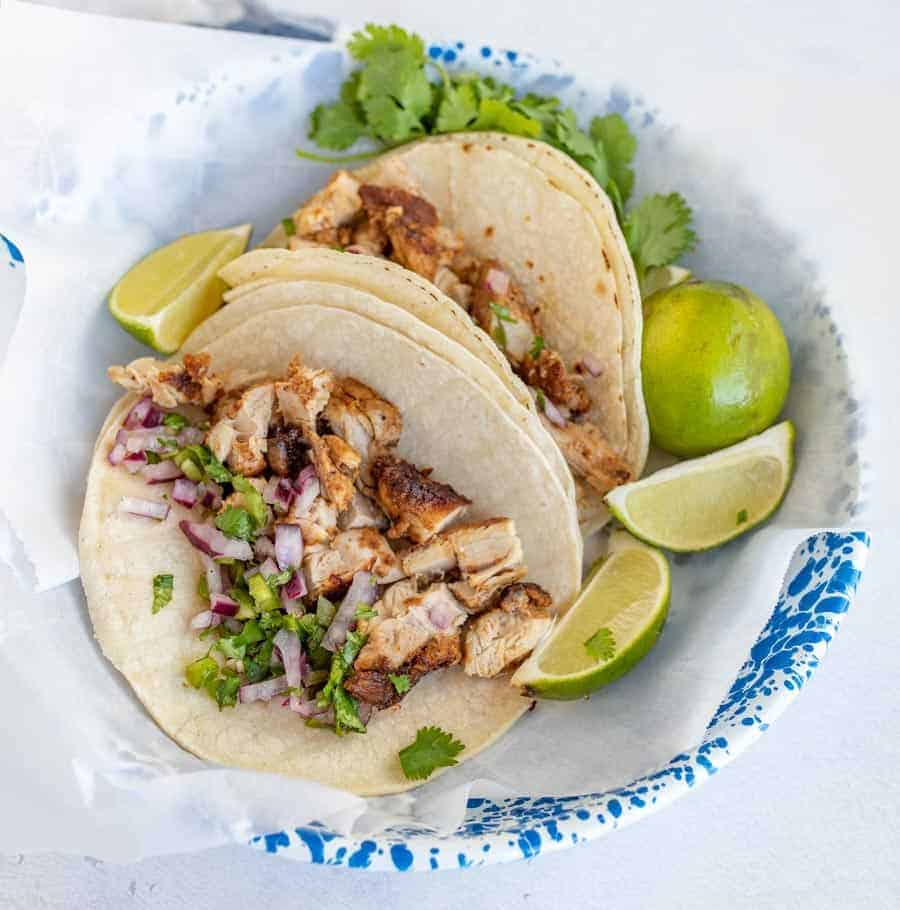

Chicken tacos

Description
These light chicken tacos make for a tasty weeknight treat.
Ingredients
- Boneless chicken breast or thighs
- Lime juice
- Cumin
- Oregano
- Olive oil
- White or yellow onion
- Grated cheddar cheese
- Sour cream
- Corn tortillas
Steps
-
Combine chicken with lime juice, cumon, oregano and olive oil. Leave to
marinate for half an hour on the counter, or a few hours in the fridge
-
Add olive oil to a preheated pan and sear chicken until cooked through
and browned on all sides. Remove chicken from pan and set aside
-
Dice the onion and prepare grated cheese, sour cream and tortillas.
- Using two forks, shred the chicken into thin strips.
-
Add shredded chicken to a tortilla, alongside diced onion, grated
cheese, a dollup of sour cream, and a light squeeze of lime juice. Serve
immediately.